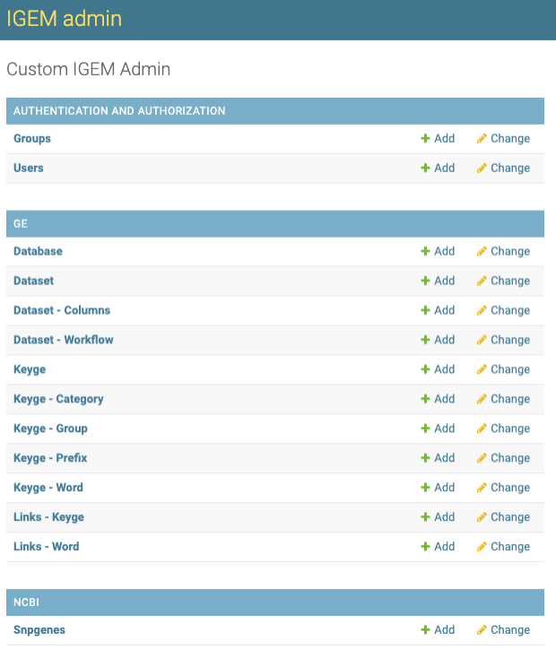
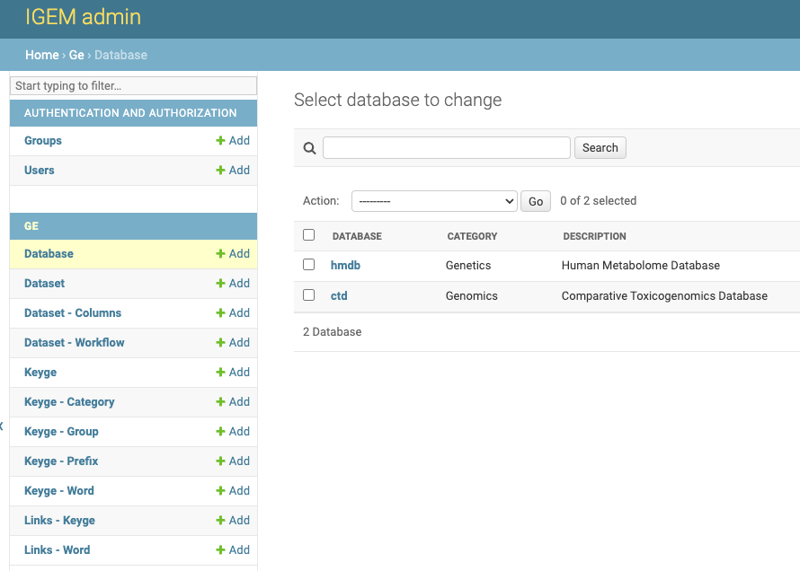
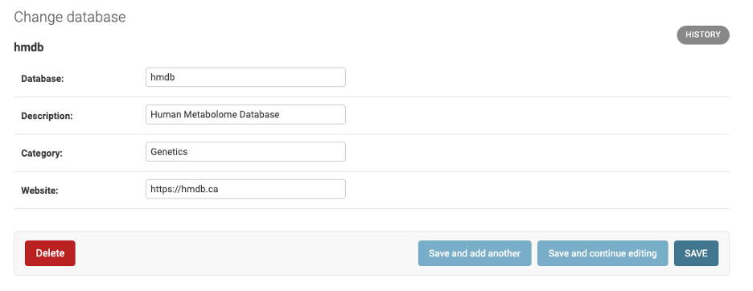
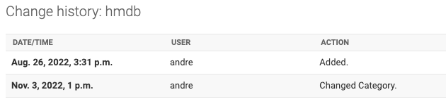
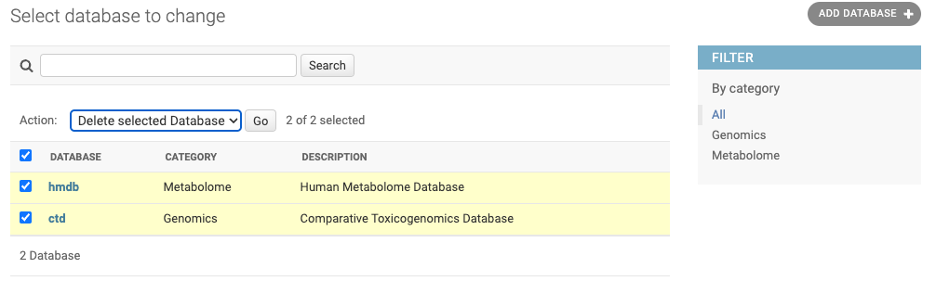

Database¶
DATABASE master data refers to an external data source and groups DATASET over the same domain. The connection between IGEM and external data sources will be established by DATASET.
DATABASE is used for selecting and grouping queries and future security and authentication features.
- The DATABASE data will be stored in the ge_database table of the IGEM DB defined in the initial parameters. The available fields are:
ID: GE.db internal key
Database: Abbreviated name of the DATABASE
Description: Description for identifying and consulting the DATABASE
Category: Category to help identify and group the DATABASE
Website: Electronic address of the maintainer of the available data
Important: Do not confuse the IGEM database, here named GE.db, with the external Databases that will be treated simply as DATABASE.
The inclusion of new data can be performed via the process db . On the command line:
$ python manage.py db --load database --path {path/filename}.csv
Example of the load file can be found in the folder src/load/md/database.csv
To list the DATABASE already registered, type the command line:
$ python manage.py db --show database
To download the DATABASE already registered, type the command line:
$ python manage.py db --download database --path {path/filename}.csv
To delete a specific DATABASE, type the command line:
$ python manage.py db --delete database --database {Database Abbreviated Name}
To delete all DATABASE Table. type the command line:
$ python manage.py db --truncate database
CAUTION: As GE.db is a correlational base with key integrity, all records linked to the deleted data will also be deleted, which includes DATASET and KEYGELINKS information
DATABASE Web Interface¶
Through IGEM’s friendly web interface, it will be possible to carry out DATABASE management activities.
Activate the IGEM web service if you have not already done so. Go to the /src/ folder and type the command line:
$ python manage.py runserver
If it returns a port error, you can specify a different port:
$ python manage.py runserver 8080
Access the address in the link provided in Starting development server. Significantly, this address may vary depending on the initial settings performed during installation.
After user authentication and on the initial administration screen, select an option Database.
On the Database screen, we will have options to consult, modify, add and eliminate DATABASES.
On the first screen, we have a view of all available DATABASES. To consult, click a desired DATABASE.
- On the next screen, we have all the DATABASE fields open for modifications. To modify, change the desired information and select one of the three button options:
Save and add another: Will save the changes and open a blank DATABASE screen to add a new DATABASE record.Save and Continue editing: Will save the changes and continue on the DATABASE screen.Save: Will save the changes and return to the screen with the list of DATABASEs.
In the History button, we can consult all the modifications carried out in the DATABASE, this function will be important to track modifications and audit the process.
The DELETE button will permanently delete the DATABASE record.
Caution: when deleting a DATABASE, the system will also delete all records dependent on that DATABASE, which include DATASETs, Parameterizations of transformations and KEYLINKS
Deletion can also be performed en bloc. On the DATABASE List screen, select all the DATABASE you want to delete, choose the Delete Selected Database action and click on the GO button.
Be careful, this elimination operation will be definitive for the DATABASEs and for all other records dependent on it, as already explained.
- To add new DATABASE, we will have three different ways:
by the
+ Addbutton on the left sidebar.Through the
ADD DATABASE +button in the right field of the DATABASEs list.Via the
Save and add anotherbutton located within a DATABASE record.
- For the DATABASE, we will have two filter locations:
First located at the top of the DATABASE List screen where we can search broadly.
Second on the right sidebar, being able to select by category of DATABASEs.